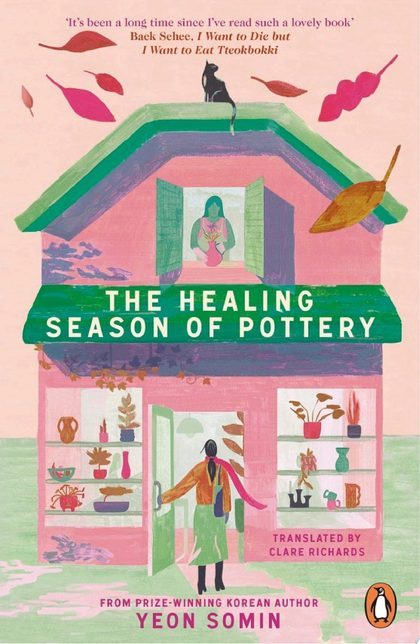

the healing season of pottery
Random House
Listen
Listen on AudibleMonthly pick or purchase · English editionListen on StorytelPurchase only · English edition · Only available for purchaseListen on BookBeatPurchase only · English edition · Not included in subscription
Links and plan info checked 24 November 2026